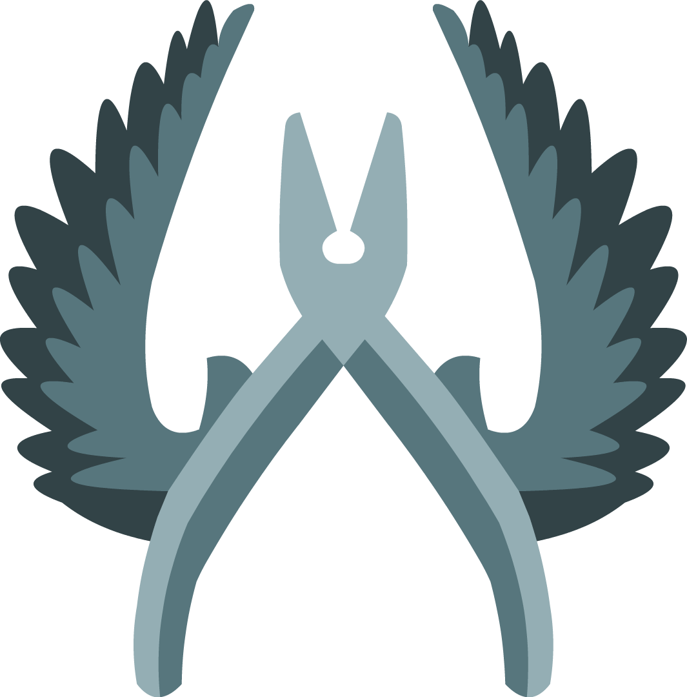

Antiterroristi
Gli antiterroristi sono coloro che hanno i siti-bomba più vicini, però
hanno le armi più costose e meno forti a differenza dei terroristi.
Anti-terroristi
Terroristi
Menù
Mappe
Come si gioca?
Armi
Modalità
